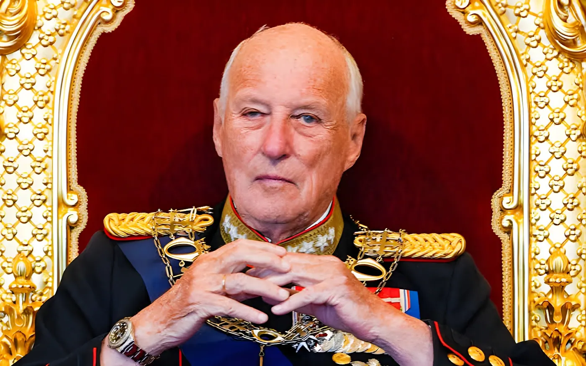

Hospitalisé depuis le 17 août à Oslo pour une maladie rare du sang, le roi Harald V de Norvège est mort le 28 août 2026 au petit matin, entouré de sa famille. Monté sur le trône en 1991, il avait profondément modernisé une monarchie jusque-là distante, porté par son mariage avec une roturière et par une proximité assumée avec les Norvégiens. Son fils, le prince héritier Haakon, lui succède immédiatement et devrait régner sous le nom de Haakon VIII.
Né le 21 février 1937 au domaine de Skaugum, près d'Oslo, Harald est le troisième enfant et le seul fils du prince héritier Olav, futur roi Olav V, et de la princesse Märtha de Suède. Il n'a que trois ans lorsque l'invasion allemande de la Norvège, en avril 1940, contraint la famille royale à fuir : sa mère et ses sœurs trouvent refuge aux États-Unis, où le jeune prince passe une partie de son enfance avant de rentrer au pays en 1945, à la fin de l'Occupation. Il poursuit ensuite des études à l'université d'Oslo, à l'Académie militaire norvégienne puis au Balliol College d'Oxford, tout en menant une carrière sportive de haut niveau en voile, discipline qu'il pratique aux Jeux olympiques dans les années 1960 et 1970.
Devenu prince héritier en 1957 à la mort de son grand-père le roi Haakon VII, Harald doit attendre près de dix ans avant de pouvoir épouser, en 1968, Sonja Haraldsen, une roturière dont l'union avec l'héritier du trône avait longtemps été jugée impossible par la cour. Ce mariage, célébré à la cathédrale d'Oslo, est resté dans la mémoire collective norvégienne comme le symbole d'une monarchie qui commençait à s'ouvrir à la société qu'elle représentait.
Pendant ses trente-cinq années de règne, Harald V s'est employé à rapprocher la monarchie des Norvégiens, multipliant les gestes de proximité et acceptant, non sans réticence initiale, le mariage de son fils Haakon avec Mette-Marit Tjessem Høiby, mère célibataire au passé médiatisé, en 2001. Chef symbolique de l'Église de Norvège jusqu'à la séparation de celle-ci de l'État en 2012, il a marqué les esprits par son discours après les attentats du 22 juillet 2011, qui avaient fait 77 morts, se présentant comme un roi porteur du deuil de toute la nation.
La santé du roi s'était dégradée progressivement depuis plus de vingt ans : traité pour un cancer de la vessie en 2003, opéré du cœur en 2005 puis à nouveau en 2020 pour le remplacement d'une valve cardiaque, il avait aussi subi une opération à la jambe en janvier 2022. Les hospitalisations s'étaient multipliées ces dernières années, pour des infections, des épisodes de Covid-19 ou, en février 2026, un séjour à l'hôpital pendant des vacances à Tenerife. Devenu en 2024 le monarque le plus âgé de l'histoire de la Norvège, il était depuis la mort d'Elizabeth II en 2022 le doyen des souverains régnants d'Europe.
« Toute une nation est en deuil et le peuple norvégien garde une profonde gratitude pour une vie entière consacrée au service de la Norvège. »
— Jonas Gahr Støre, Premier ministre de Norvège, 28 août 2026Conformément à la Constitution norvégienne, le prince héritier Haakon, 53 ans, est devenu roi dès l'instant du décès de son père, et devrait régner sous le nom de Haakon VIII ; sa fille, la princesse Ingrid Alexandra, devient à son tour l'héritière du trône. Les réactions internationales n'ont pas tardé : le roi Charles III du Royaume-Uni a salué un souverain qui avait guidé la Norvège avec chaleur et humilité à travers des périodes de grands changements, et les drapeaux ont été mis en berne sur plusieurs bâtiments royaux et gouvernementaux britanniques en signe de deuil.
Naissance du prince Harald à Skaugum ; exil familial pendant l'occupation allemande à partir de 1940.
Devient prince héritier à la mort de son grand-père, le roi Haakon VII.
Mariage avec Sonja Haraldsen, une roturière, à la cathédrale d'Oslo.
Accède au trône à la mort de son père Olav V et devient Harald V, roi de Norvège.
Série de problèmes de santé : cancer de la vessie, opérations cardiaques et hospitalisations répétées.
Hospitalisation à Oslo pour une anémie hémolytique ; son état est bientôt jugé extrêmement sérieux.
Mort à l'hôpital d'Oslo à l'âge de 89 ans ; son fils Haakon lui succède aussitôt.
En trente-cinq ans de règne, Harald V a fait passer la monarchie norvégienne d'une institution encore marquée par la rigidité de la cour à une figure d'unité nationale, incarnée par sa proximité avec les Norvégiens et par une famille royale qui a appris, souvent dans la douleur, à composer avec des parcours personnels non conventionnels. Sa mort ne laisse planer aucune incertitude institutionnelle : la succession, automatique et immédiate, place son fils Haakon sur le trône sans interruption ni cérémonie préalable, la Norvège ayant déjà organisé cette transition à plusieurs reprises lorsque le prince héritier assurait la régence durant les hospitalisations de son père.
Reste à la nouvelle monarchie la tâche de perpétuer l'équilibre trouvé par Harald V entre tradition et modernité, à un moment où plusieurs maisons royales européennes, de Londres à Bruxelles, traversent elles aussi des transitions générationnelles.